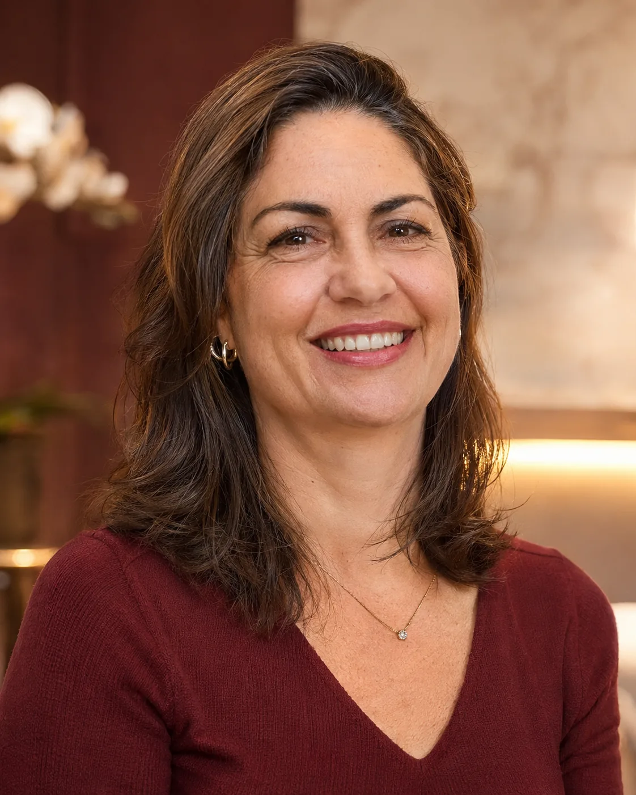
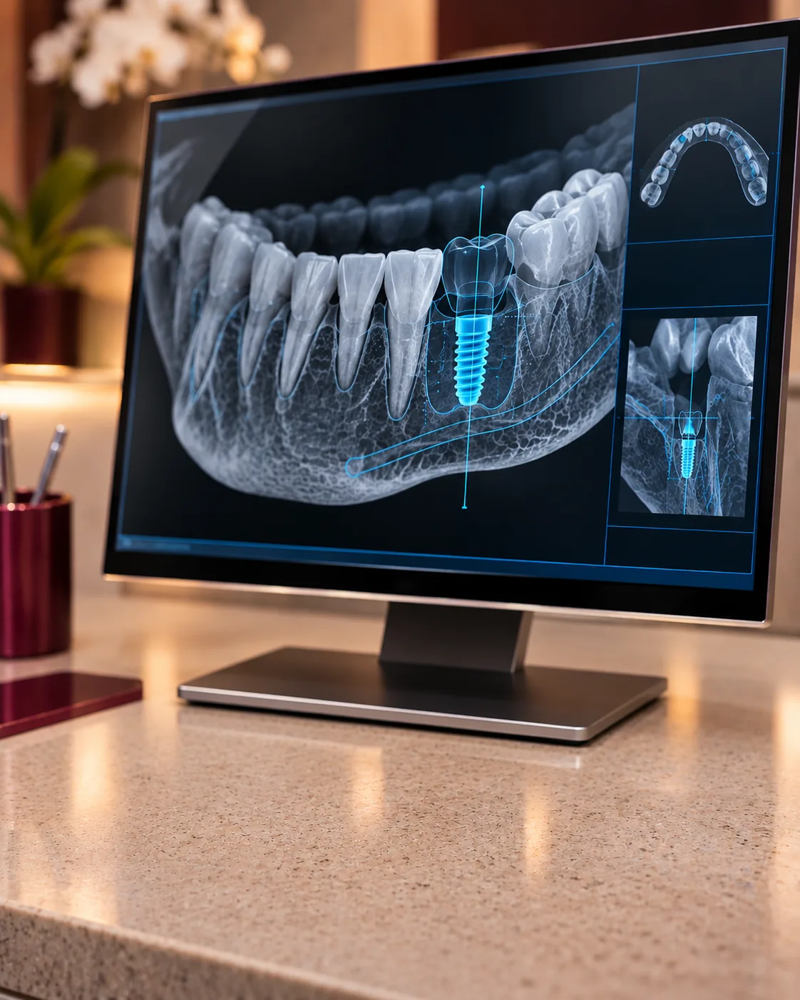
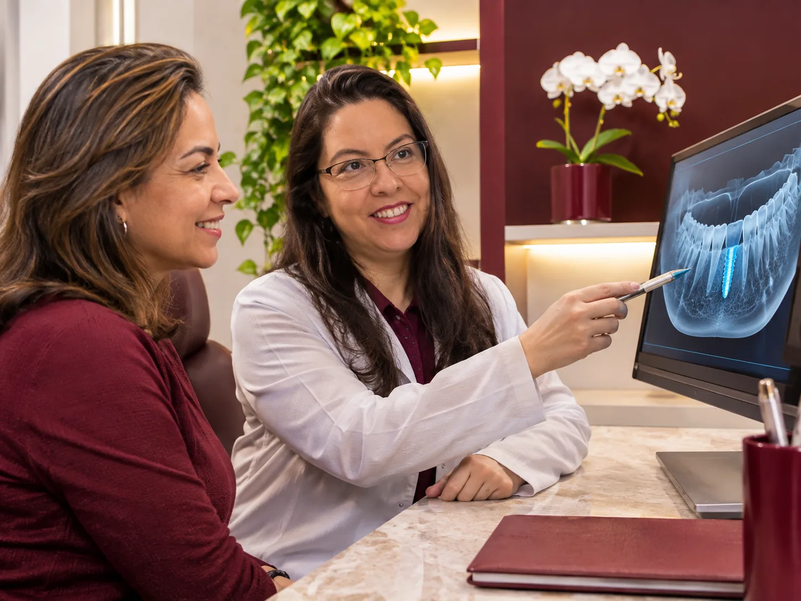

Planejamento 3D
Planejamento tridimensional individualizado para cada paciente.
A perda de um dente pode comprometer a estética, a mastigação e a harmonia do sorriso. Hoje, a implantodontia conta com recursos tecnológicos que permitem planejar a reposição dentária de maneira cada vez mais precisa e personalizada.


A cirurgia guiada para implantes dentários é uma técnica que utiliza recursos digitais para planejar previamente a instalação dos implantes, considerando a anatomia óssea, a posição dos dentes e o resultado protético desejado.
É uma abordagem que integra tecnologia, planejamento e conhecimento clínico para tornar o procedimento mais previsível.
Agendar avaliaçãoDo exame ao guia cirúrgico, o implante é planejado antes de a cirurgia começar.
Avaliação clínica e tomografia computadorizada de feixe cônico (CBCT), que permite analisar a quantidade e a qualidade óssea e as estruturas anatômicas da região.
As informações da tomografia são associadas ao escaneamento digital da arcada dentária.
Definimos previamente a posição, a inclinação, a profundidade e as dimensões do implante, considerando a futura reabilitação protética.
Confeccionado sob medida, o guia orienta a sequência de perfuração e a instalação do implante durante a cirurgia.
A indicação depende de cada paciente. A cirurgia guiada depende das condições clínicas e anatômicas de cada caso. Nem todos os casos permitem a realização de uma técnica sem retalho ou com a mesma abordagem cirúrgica.
Planejamento tridimensional individualizado para cada paciente.
Maior controle da posição e da inclinação do implante.
Consideração prévia das estruturas anatômicas da região.
Integração entre o planejamento cirúrgico e a futura prótese.
Em casos selecionados, cirurgia sem necessidade de grandes incisões.
A cirurgia de instalação do implante geralmente é realizada em uma única sessão e pode levar de aproximadamente 30 minutos a 1 hora por implante, dependendo da complexidade do caso.
Após a instalação, inicia-se a osseointegração, quando ocorre a união entre o implante e o tecido ósseo. Esse processo costuma levar de 2 a 6 meses, podendo variar conforme as condições ósseas, a região tratada e a necessidade de procedimentos complementares.
Em situações específicas, é possível instalar uma prótese provisória no mesmo dia, desde que existam condições clínicas favoráveis.
Na VM Odontologia Personalizada, o planejamento digital é integrado à avaliação clínica e às necessidades de cada paciente.
Mais do que instalar um implante, buscamos planejar uma reabilitação que respeite a anatomia, a função mastigatória e a estética do sorriso.
Agendar avaliação
Recomendo muito fui muito bem tratada fiz implante todos elogiam muito amei Dra Evelyn maravilhosa show
Ambiente extremamente acolhedor e agradável! A Dra. Evelin é uma excelente profissional e está sempre modernizando a infraestrutura da clínica. Além do atendimento impecável, vale muito a pena.
Ótimas profissionais, excelente atendimento e muito bom ambiente. Super recomendo.
Foi maravilhoso as meninas são incríveis eu gosto muito me sinto muito bem são simpáticas
Ótimo atendimento! Trabalho de excelência. Organização. Tradição e modernidade, entregam um atendimento seguro e moderno.
Faço tratamento dentário há 25 anos. Profissionais competentes naquilo que fazem.
Excelentes profissionais, excelentes pessoas, anos de tratamento, amigas!
Conheça as possibilidades de reabilitação com implantes dentários.
VM Odontologia Personalizada